This is the apps starting page, where it shows your
meditation streak, along with the access to view your
calendar, or start a session immediately
Your meditation streak increments up to once per day, if you do a meditation session on that day, and resets either if you miss a meditation session, or fail to meditate for over a week.
Want to show off your meditation streak to one of your friends? You can do so by clicking the share button on the top right corner of the screen
For instance, if I click on the "text" icon, I can send a message to my friend regarding my meditation streak!
Clicking on "View Calendar" will launch you to an new page with a Calendar UI, allowing you to view the history of your meditation sessions, or book a session in advance
You can also click on the "Calendar" icon at the bottom, which will open your personal phone calendar app, if you prefer to store your upcomming meditation sessions there (more on this later)
Here shows a list of meditation sessions that the user has partaked in previously
"Green" indicates that the session was complete
"Red" indicates that the session was incomplete
Clicking on a future, or current day will allow you to book a meditation session
in advance
Clicking on "Add a Session" will open a form for the user to fill in for details about the
meditation session; that being the session type (Mindfulness or Breathing Exercise), the due date, and the duration
of the session
Clicking the "Submit" button will take you back to the previous page, and alert you with a message at the bottom, illustrating that the session add was successful
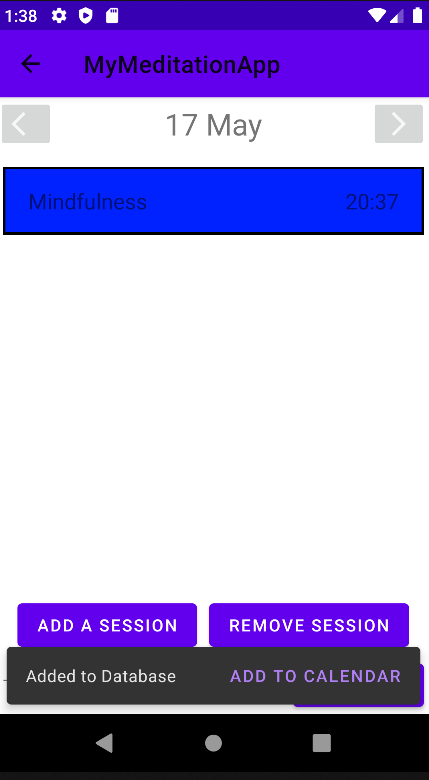Clicking on the "Add to calendar" button will open the users calendar app, with the details of the session already inputted, so the user can add their meditation session to their calendar app if they please
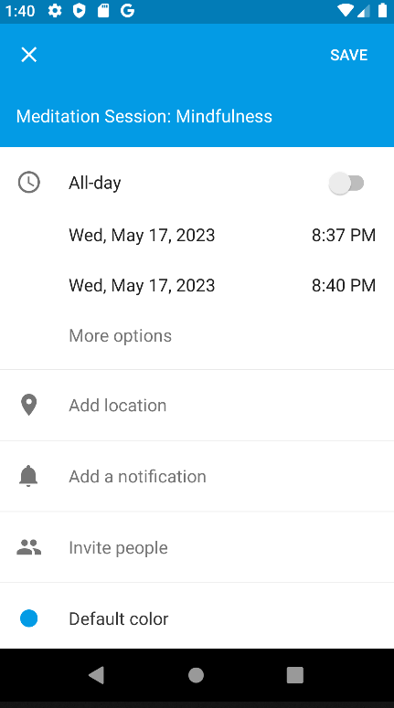 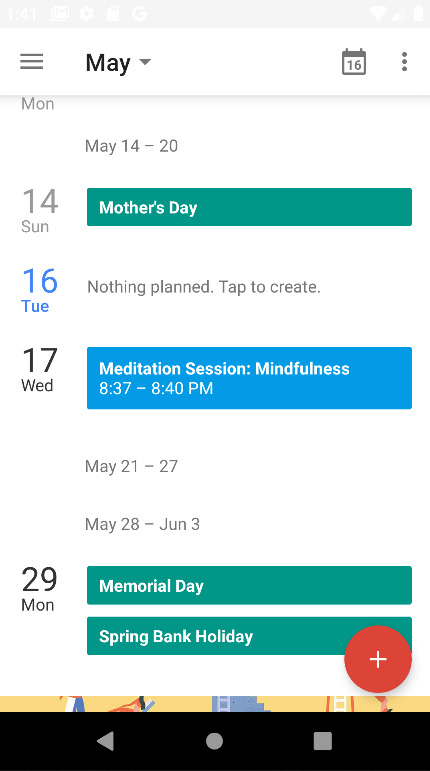And as you can see, the meditation session was successfully added to the calendar app!
Remember: If you don't complete a session within 10 minutes after its due date, it will be labelled as "incomplete" and will reset your streak.
You can refresh the status of your meditation session by swiping up on the app
This is before the session has expired
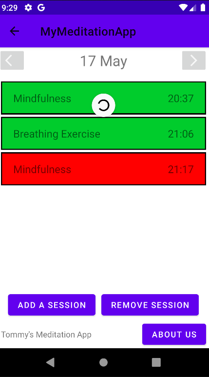And this is after
Now that it is in the time range of starting our booked meditation session from earlier, we will get a notification, reminding us of our previously booked session
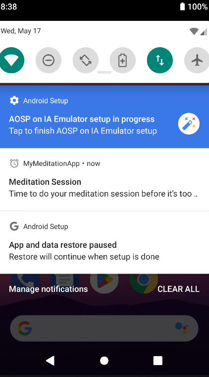 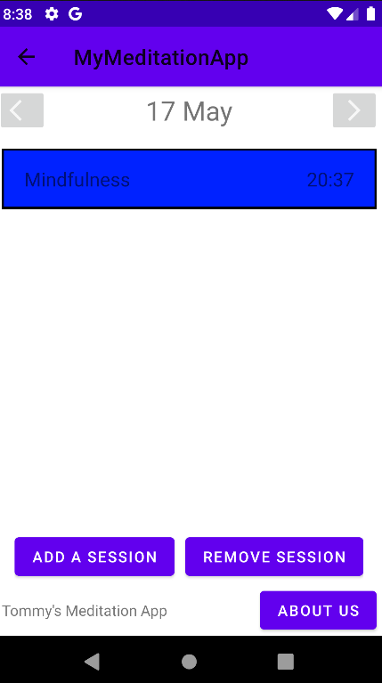Clicking on this notification will launch us to the day of the session, where we can begin.
So, I can click on the above blue session, which already has a duration value from the time it was booked,
so just input the sound you want in the background
Or the breathe-in/out times (depending on the session type) and you're good to go!
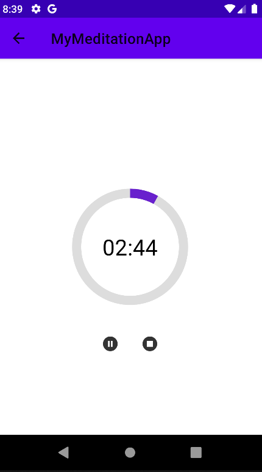 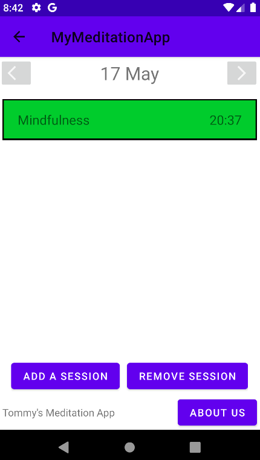And once you've fully completed the session, it will be labelled as "complete" in the database!
You can also start a session immediately instead
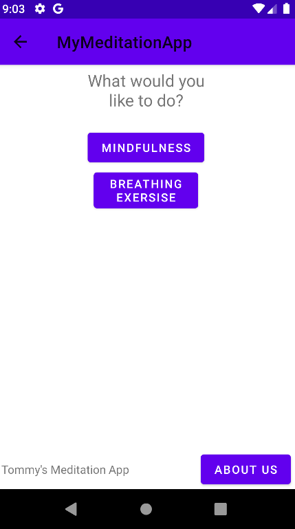Simply choose the session type that you want
And any required parameters (depending on what session you chose)
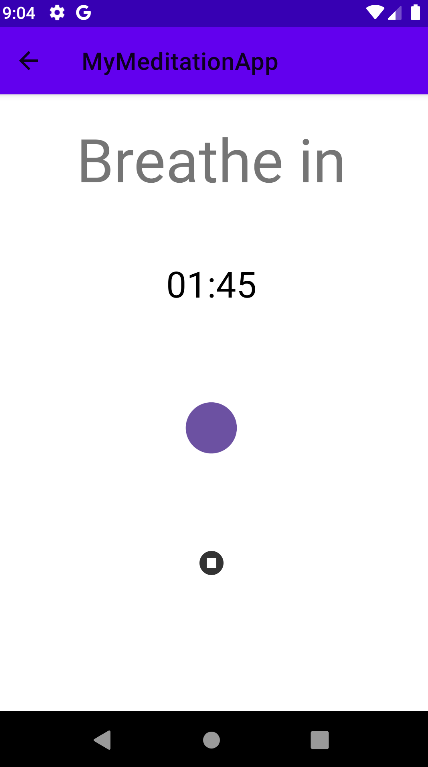For breathing exercises, the UI will illustrate when and how long you need to breathe in/out for with the very intuitive self inflating/deflating circle in the centre!
Once you have fully completed the session, you can view it in your calendar as a complete session as before.
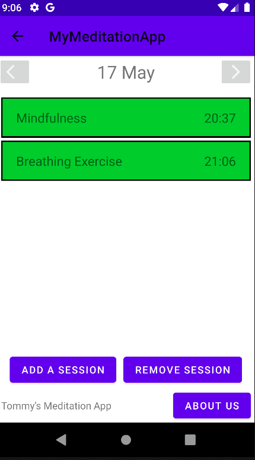Don't feel like doing a session you booked session anymore? You can delete it before its passed the dealine by simplying clicking the "Remove session" button and clicking the session you wish to delete
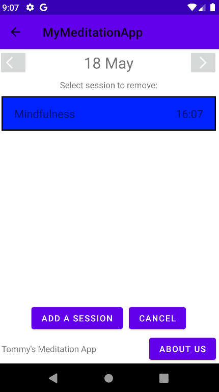 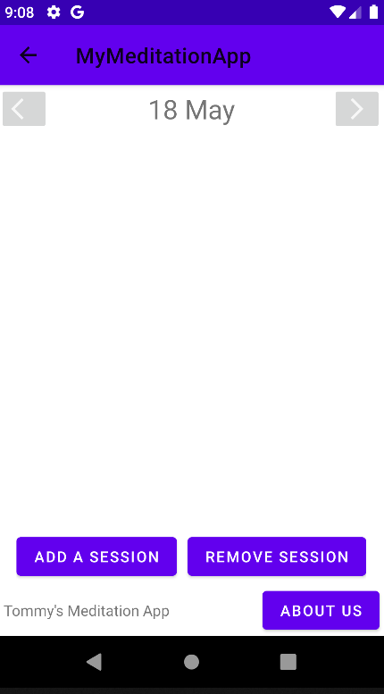